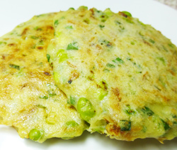

サクラエビと枝豆のチヂミ風
- 調理時間：20 分
- （一人当たり）
- カロリー：307kcal
- たんぱく質：13.5g
- 脂質：13.0g
- 炭水化物：33.2g
- 塩分：1.6g


＜２人分＞
- ジャガイモ（すりおろす）
- 中2個
- 薄力粉
- 大さじ2
- 卵
- 1個
- 青ネギ（小口切り）
- 4本
- 枝豆
（茹でてさやから取り出す） - 適量
- 乾燥サクラエビ
- 1/2カップ
- 塩・コショウ
- 各少々
- 梅干し（包丁でたたく）
- 大1個
- サラダ油
- 少々


- ジャガイモをすりおろし、余分な水分は捨てて、溶き卵、薄力粉を加える。
- 桜エビと細ネギの小口切りを加え、茹でてさやから出した枝豆も加えて①に混ぜる。
軽く塩・コショウをして、ペースト状の梅干しを入れて混ぜ合わせる。 - フライパンにサラダ油をしき、小判型に焼く。
サクラエビと枝豆のチヂミ風
サクラエビは、頭から尻尾まで丸ごと食べられるうれしい食材。殻にはカルシウムや動物性食物繊維のキチン・キトサンが含まれます。お料理の仕上げに少し使うだけで栄養価がパワーアップ！お子様からお年寄りまで幅広い層におすすめです。
生地に使用したジャガイモに多く含まれる栄養素は、ビタミンB1、ビタミンC、カリウムなど。そもそもビタミンCは熱に弱い栄養素ですが、ジャガイモのビタミンCは、デンプン質が多いため、熱に強いのが特徴です。多量の汗をかき、倦怠感や手足のつる等の症状には、カリウムやマグネシウムを補給して、疲労回復や夏バテに備えましょう！